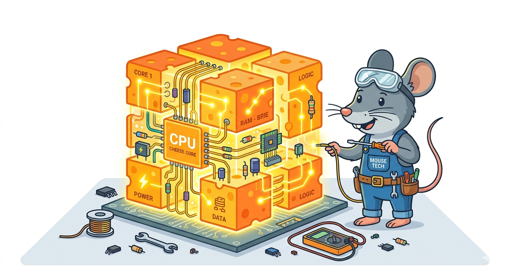
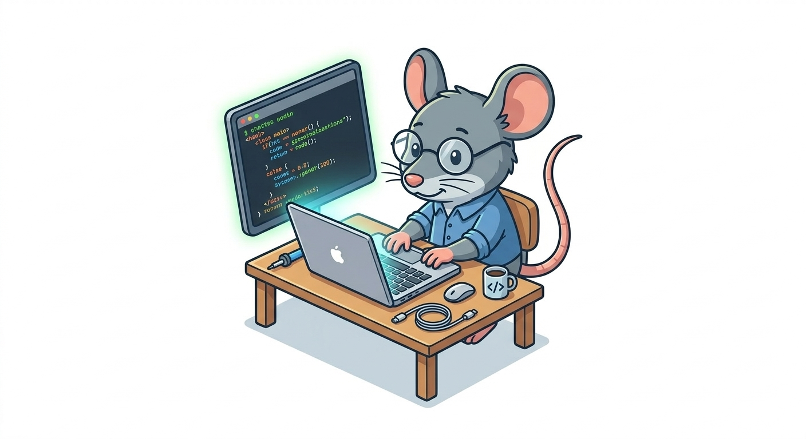
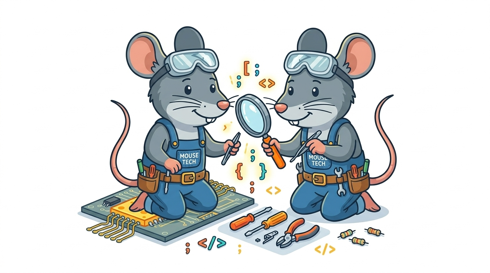
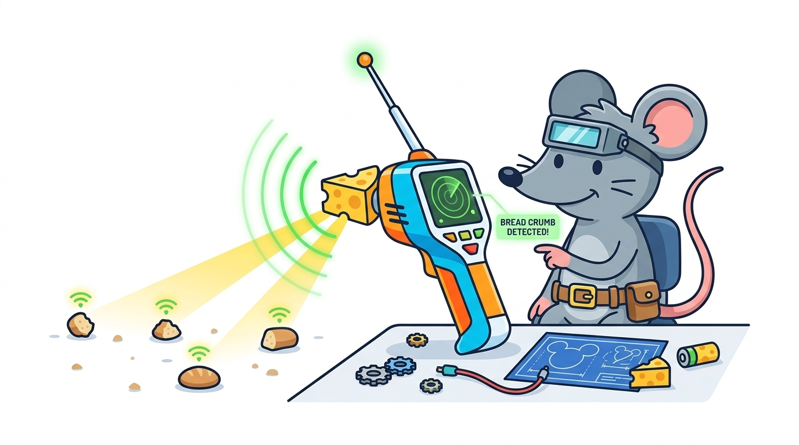
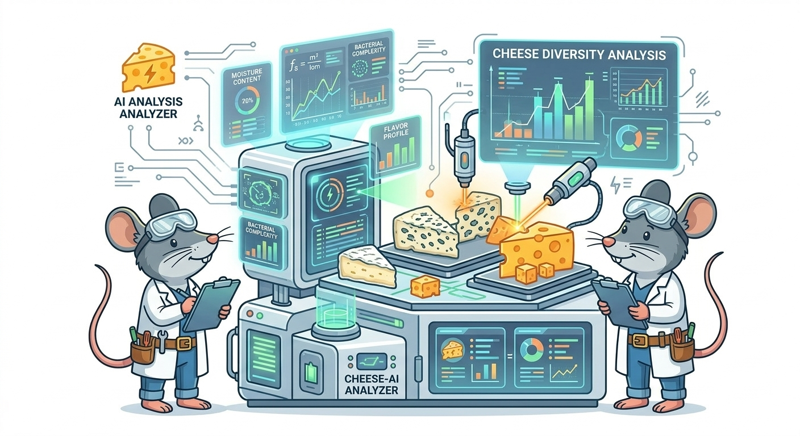

Cards

Cheese CPU
A revolutionary processor that converts cheese energy into computing power. Designed by Capable Mouse to keep tiny machines running efficiently.

Nano Coding Laptop
A miniature laptop perfectly sized for a mouse engineer. Built for writing code, debugging programs, and managing inventions on the go.

Debugging Toolkit
A specialized toolkit used to hunt down bugs in both hardware and software. Essential for keeping every invention in the workshop running smoothly.

Wireless Crumb Tracker
A clever tracking device that detects and maps nearby crumbs using wireless signals. Perfect for locating snacks and lost resources.

AI Cheese Analyzer
An advanced AI system that analyzes different cheeses to determine their energy potential. Helps Capable Mouse choose the best fuel for new inventions.